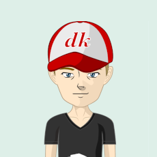

👋Hi there!
Gabriel Salinas.Codes
DEVELOPER

Coding is a catalyst for creation, to portray
an idea into reality and be able to interact with it anywhere in the world I find
it to be fascinating, it is the reason I got hooked at 14.
This feeling is something I always try to tap into when I'm developing projects.
My main interest is to enjoy the process and challenges that appear on the coding coast but
ATST make cool things. This
is mainly where I want to be, in the world of ideas, logic and mental
labyrinth. Feel free to check my work or connect with
me: